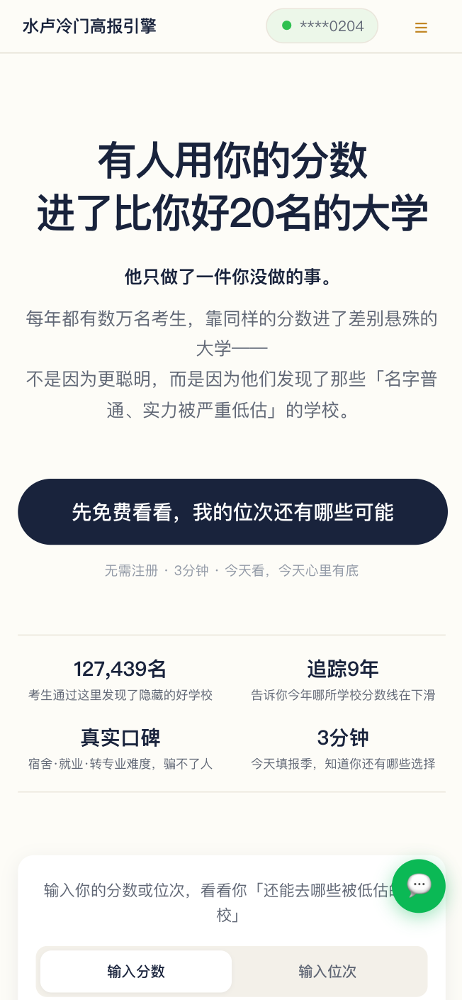
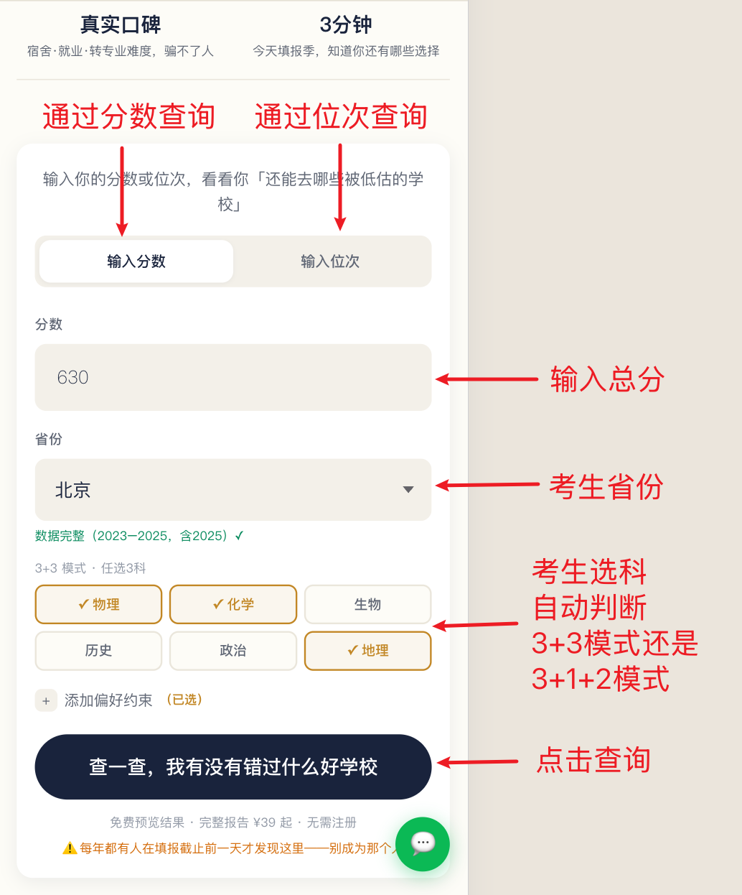
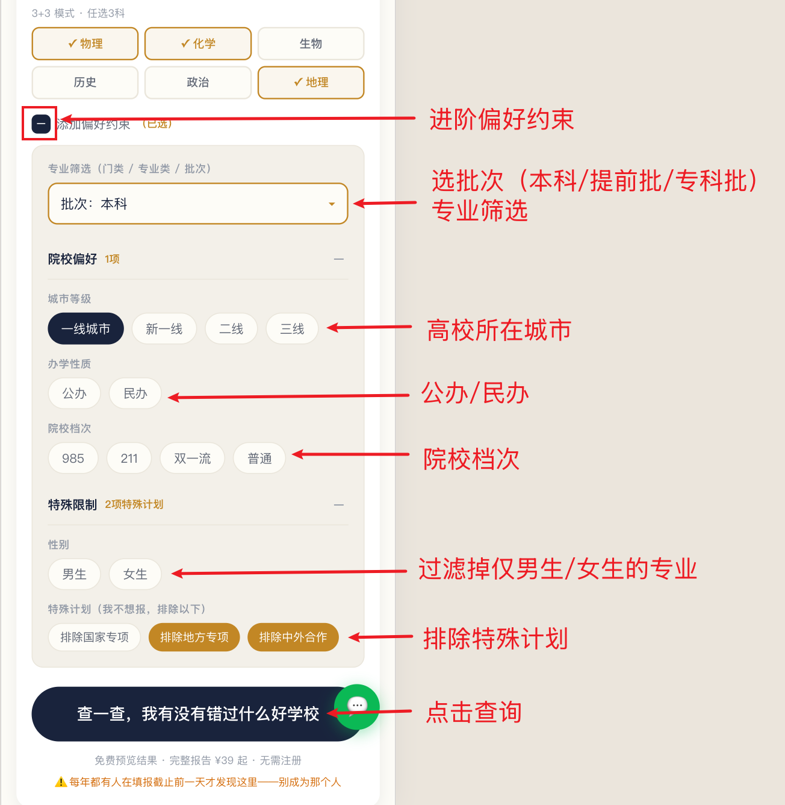
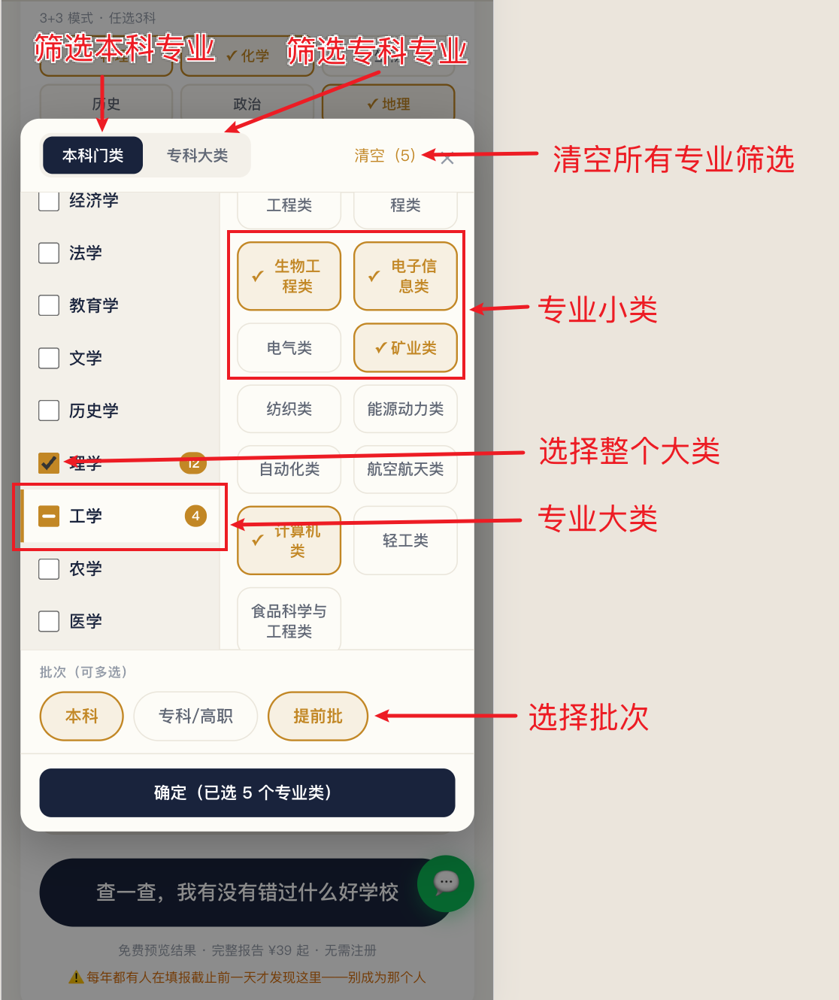
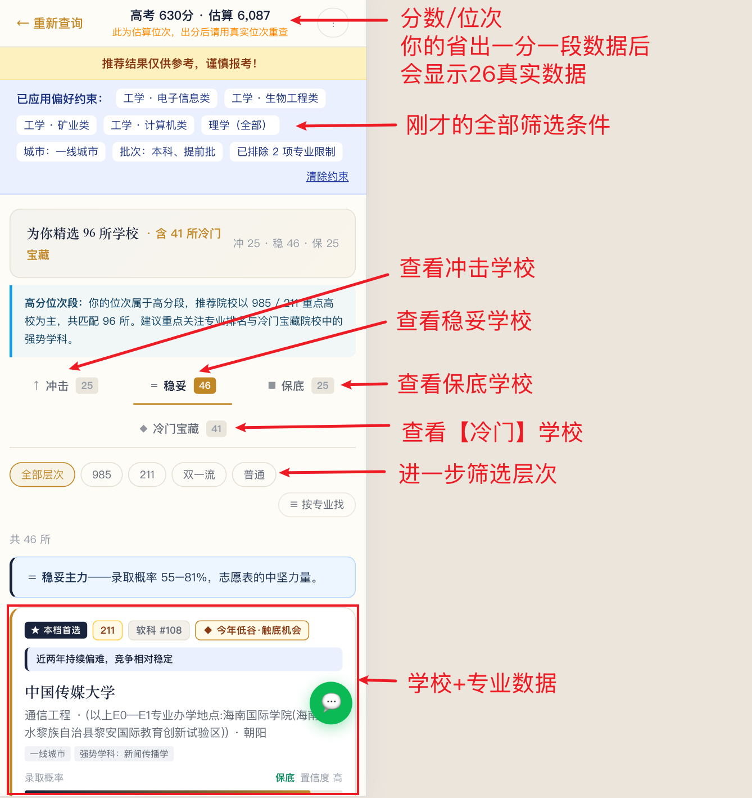
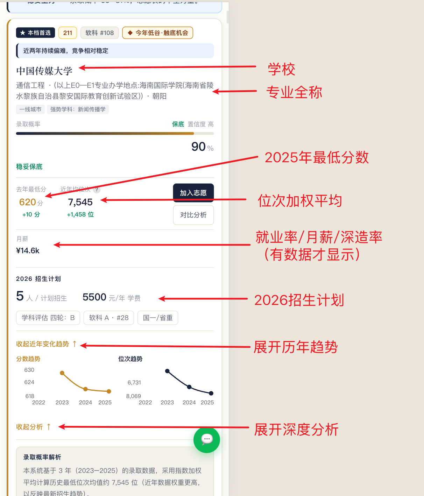
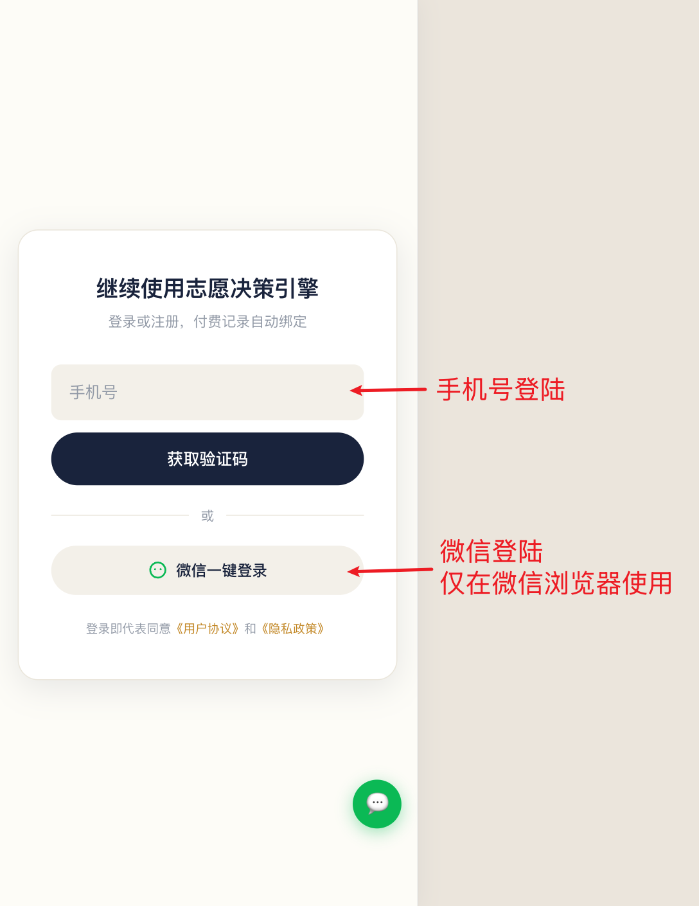
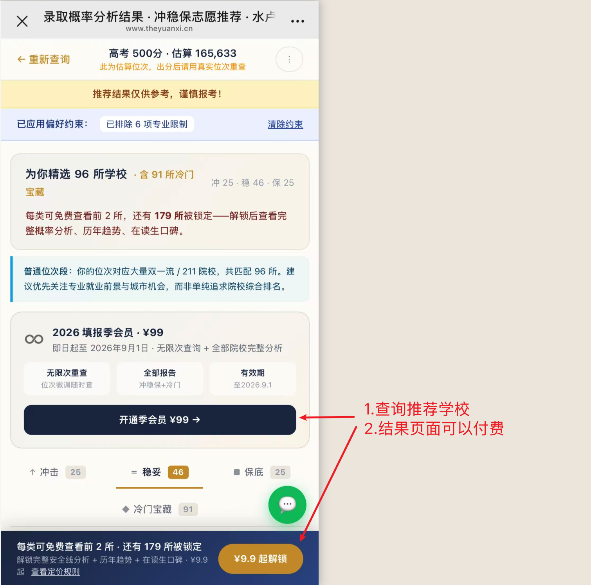
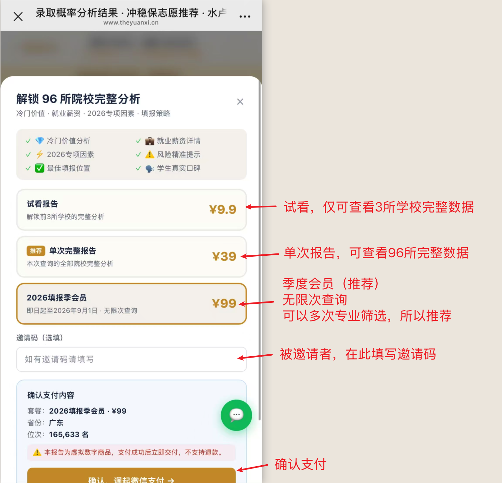
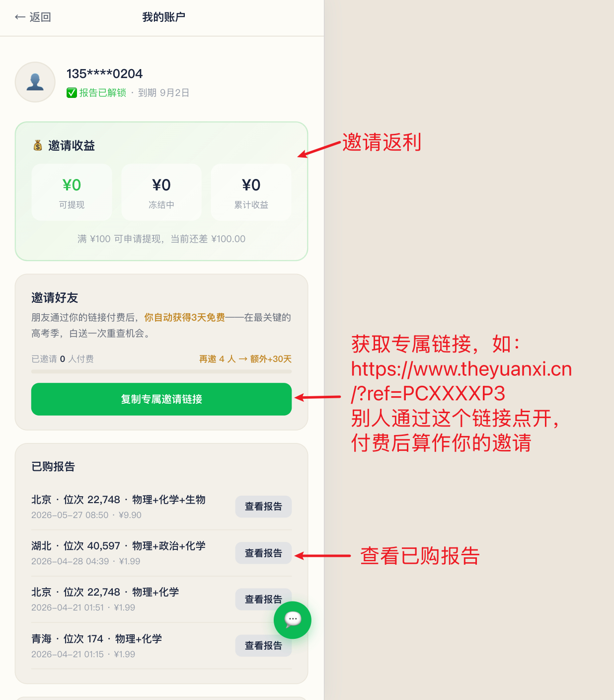

输入位次，查录取概率，发现冷门好校。
跟着截图操作即可。
版本 2026.06
一句话：输入高考位次 + 省份 + 选科，系统给出能报的学校、录取概率，以及同分段里被低估的「冷门宝藏」。
传统工具按分数线「排队」；水卢在同一分数段里帮你找就业更好、学科更强、但分数线还没涨的选项。
打开 www.theyuanxi.cn 即可使用，支持 31 省、三种高考模式，微信内也能打开。
遇到问题：网站首页底部点「意见反馈」，或页面右下角绿色 💬 按钮提交反馈。
打开首页，选省份，填全省位次（出分前可用分数估算），选满选考科目，点「查询」。


点「专业筛选」或「展开偏好约束」，可限定专业方向、城市、层次、批次等。不填则推荐全部。


等几秒跳转结果页，学校按冲 / 稳 / 保 / 冷门宝藏分类展示。


| 标签 | 概率 | 含义 |
|---|---|---|
| 冲 | 25%～55% | 有难度，值得一搏 |
| 稳 | 55%～82% | 主力志愿区间 |
| 保 | ≥ 82% | 兜底防滑档 |
| 冷门宝藏 | — | 同分段性价比最高的隐藏选项 |
卡片上的录取概率、去年最低分/位次、趋势箭头（↑变难 ↓变容易）可直接对比。点「查看推荐理由」可看完整分析。
| 内容 | 未付费 | 付费后 |
|---|---|---|
| 学校列表 | ✅ 可见 | ✅ |
| 第 1 所「稳」档 | 完整数据 | 完整数据 |
| 其余学校详情 | 打码 / 锁定 | 全部解锁 |
| PDF 报告 | ❌ | ✅ |
热门城市 + 热门专业把分数线炒高；有些学校专业实力不差、名字朴素或位置偏，报的人少、分数偏低——这就是「捡漏」机会。
系统从 7 个角度交叉验证：城市折扣、名字矫正、小年窗口、学科溢价、口碑滞后、产业趋势、委培定向。命中多种信号 → 标为「冷门宝藏」。
| 维度 | 说明 |
|---|---|
| 认知差距 | 薪资/实力强，但报考热度低 |
| 薪资错配 | 录取分不高，毕业薪资偏高 |
| 产业动能 | 所在行业未来 4～5 年上升 |
| 供需稀缺 | 全国招生少，毕业生供给稀缺 |
| 档位 | 价格 | 内容 |
|---|---|---|
| 试看报告 | ¥9.9 | 每类解锁前 3 所完整分析 |
| 单次完整报告 | ¥39 | 本次查询全部学校 + PDF 下载 |
| 2026 填报季会员 | ¥99 | 至 2026.9.1，无限次查询 + 全部功能 |
怎么选：位次定了、只查一次 → ¥39；模考阶段要反复调志愿 → ¥99 季卡（查 3 次以上更划算）。
在哪下单？在结果页操作，不在首页或定价页直接付款。流程如下：



登录 → 个人中心 →「复制专属邀请链接」→ 发给朋友。朋友通过链接付费后：
| 规则 | 说明 |
|---|---|
| 比例 | 好友实付金额的 30% |
| 冻结 | 15 天后转入可提现余额 |
| 提现 | 满 ¥100 在个人中心申请提现 |

志愿表：收藏学校、拖拽排序，自动标冲/稳/保。对比：最多 3 校并排。AI 助手：问学校/专业/城市选择。专业风向标：看专业近 5 年趋势。
系统根据各省一分一段表做分数与位次互转。出分前用模考分数估算的位次仅供参考，高考出分后必须用真实位次重新查询。每年试题难度不同，分数波动大，位次更稳定。若换算结果与考试院公布不一致，以官方一分一段表为准。
整合 2017–2025 各省公开录取数据、2026 招生计划、学科评估、招聘与口碑数据。数据量大但不等于百分百准确：不同来源统计口径可能不同，部分省份更新有先后，预测基于历史规律，高考每年都有波动。仅供参考，填报前请对照官方招生简章核实。
不可以直接照搬。本系统根据历年录取数据做概率预测，不一定准确，仅作为选校参考。正式填报必须在各省考试院官方系统操作，且需自行核对选科要求、体检限制、招生章程等。因参考本系统推荐而填错志愿，本系统不承担责任。
不能。本系统面向普通类（文化科）考生，不支持艺术类专业、体育类专业、高水平艺术团/运动队等特殊类型招生。艺术类考生请使用对应专项工具或咨询招生办。
在查询结果页付费，不在首页。步骤：完成查询 → 进入结果页 → 点「解锁完整报告」或锁定学校 → 登录 → 选方案 → 微信支付。定价页仅作方案说明，不能直接付款。
可以当作冲 / 稳志愿参考，但差距越大风险越高。系统会标注录取概率，概率低的学校属于「冲」档。请自行核实该校往年录取位次、今年招生计划变化，不能仅凭系统推荐盲目填报。
暂不支持。目前仅支持手机号验证码登录，微信账号与手机号暂不能互绑或合并。请牢记登录用的手机号，换号后历史订单可能无法找回。
PDF 需汇总全部学校分析，数据量大，生成通常需要数十秒到几分钟，请耐心等待，不要重复点击。若长时间无响应，刷新页面后在个人中心「已购报告」中重试，或通过网站「意见反馈」说明情况。
各省出分时间不同，数据入库有先后。出分较晚的省份请耐心等待，我们会持续更新。海南、西藏等省份数据尚在完善，若结果偏少属正常，可稍后再查或通过意见反馈告知。
可以先用模考成绩或预估位次体验，但出分后必须用真实位次重查，否则推荐无参考价值。
依次检查：① 省份是否选对 ② 选科是否选对 ③ 位次是否填对。三项任一错误都会导致结果偏差很大。
不能。虚拟数字商品，支付成功即交付，不支持退款。
好友通过你的邀请链接付费后，佣金冻结 15 天，之后转入可提现余额。满 ¥100 可在个人中心申请提现。提现进度问题请通过网站「意见反馈」提交。
网站首页底部点「意见反馈」，或页面右下角绿色 💬 按钮，填写问题描述后提交。我们会认真阅读每一条反馈。